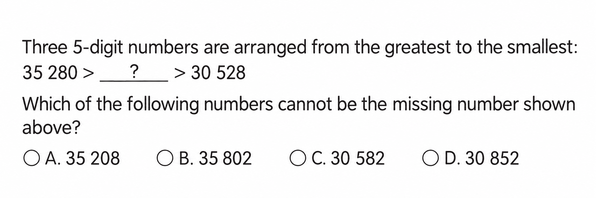
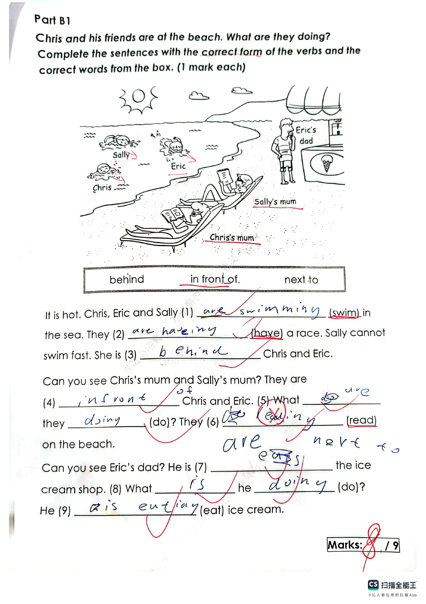
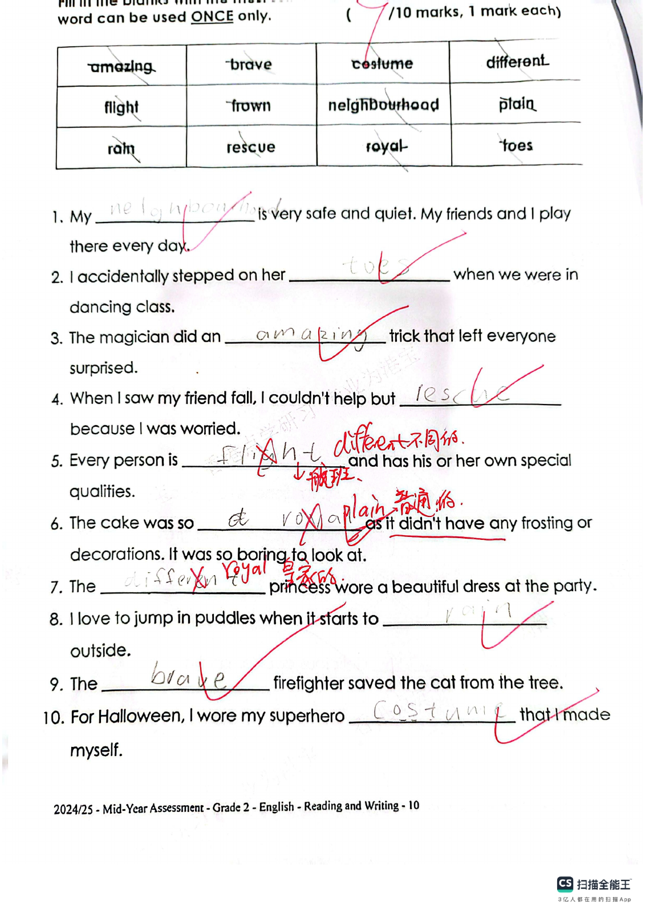
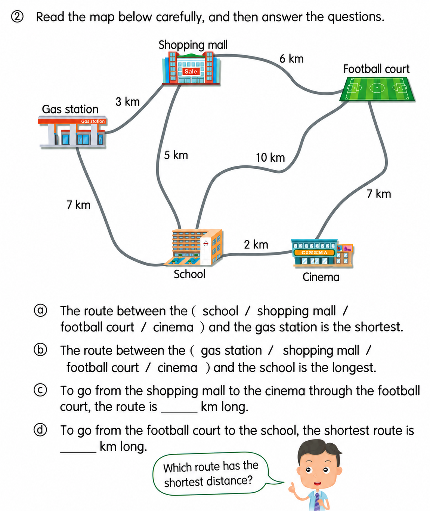
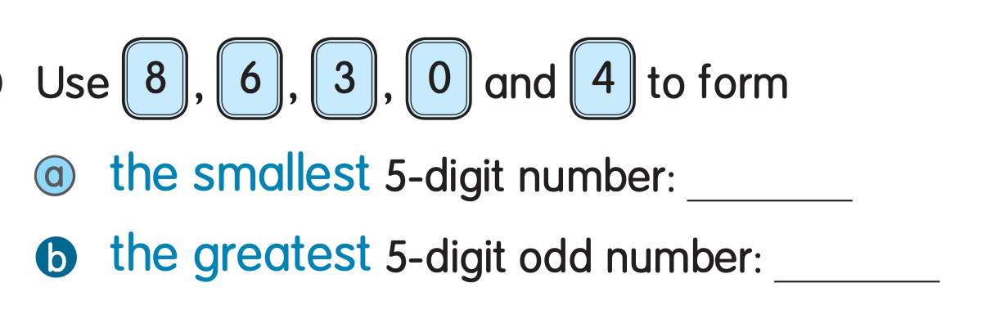

Answer: B. 35 802
已掌握
| # | 单词/词组 | 中文意思 | 例句/说明 | 已掌握 |
|---|---|---|---|---|
| noun 名词 | ||||
| 1 | present | 礼物 | I got a present from my mother. | |
| 2 | page | 页码 | Please open your book to this page. | |
| 3 | cinema | 电影院 | We watch films at the cinema. | |
| 4 | musical | 音乐剧 | We watched a musical at school. | |
| 5 | forest | 森林 | Many animals live in the forest. | |
| 6 | river | 河流 | The river flows through the town. | |
| verb 动词 | ||||
| 7 | feed | 喂养 | I feed my fish every day. | |
| phrase 短语 | ||||
| 8 | take a photo | 照相 | I take a photo of my cat. | |
| 9 | wait a minute | 等一下 | Wait a minute, please. | |
| adjective 形容词 | ||||
| 10 | quiet | 安静的 | Please be quiet. | |
| 11 | polite | 礼貌的 | It is polite to say thank you. | |
| 12 | same | 相同的 | We are in the same class. | |
| 13 | favourite | 特别喜欢的 | My favourite sport is basketball. | |
| pronoun 代词 | ||||
| 14 | them | 它们 | I can see them in the garden. | |
| possessive adjective 物主代词 | ||||
| 15 | their | 他们的 | Their bags are blue. | |
| verb phrase 动词短语 | ||||
| 16 | go hiking | 去徒步 | We go hiking on Sunday. | |
| adverb 副词 | ||||
| 17 | never | 从不 | I never run across the road. | |
| 18 | sometimes | 有时 | I sometimes walk to school. | |
| uncategorized 未分类 | ||||
| 19 | win | 赢得 | Our team hopes to win the match. | |
| 20 | notice | 通知 | A notice on the door says the library is closed. | |
| # | 单词/词组 | 中文意思 | 例句/说明 | 已掌握 |
|---|---|---|---|---|
| adjective 形容词 | ||||
| 1 | true | 正确的 | The sentence is true. | |
| 2 | brilliant | 聪明的；杰出的 | That is a brilliant idea. | |
| 3 | smart | 聪明的 | The smart girl solved the puzzle. | |
| 4 | brave | 勇敢的 | Gopal is very brave. | |
| 5 | surprised | 惊讶的 | My parents were surprised. | |
| noun 名词 | ||||
| 6 | stationery | 文具 | I put my stationery in my bag. | |
| 7 | leader | 领导者 | The leader helps the group. | |
| 8 | postman | 邮递员 | The postman brings letters. | |
| 9 | washing | 洗好的衣物 | The washing is dry now. | |
| 10 | elf（复数：elves） | 小精灵 | The elf has pointed ears. | |
| 11 | principal | 校长 | Our principal welcomed the new students. | |
| 12 | giraffe | 长颈鹿 | A giraffe has a long neck. | |
| 13 | festival | 节日 | We go to the festival. | |
| 14 | vocabulary | 词汇 | Reading can improve your vocabulary. | |
| 15 | staff | 员工 | The school staff are friendly. | |
| 16 | beef | 牛肉 | Is there any beef? Yes, there is. | |
| 17 | Chinese | 语文；中文 | Some pupils like Chinese. | |
| noun phrase 名词短语 | ||||
| 18 | a hot dog | 热狗 | May I have a hot dog, please? | |
| 19 | a pot | 锅 | Put some water into a pot. | |
| 20 | a handbag | 手提包 | They gave me a handbag. | |
| phrase 短语 | ||||
| 21 | look at | 看 | Please look at the picture. | |
| 22 | reading comprehension | 阅读理解 | We practise reading comprehension at school. | |
| verb phrase 动词短语 | ||||
| 23 | build a sandcastle | 堆沙堡 | Peter wants to build a sandcastle. | |
| 24 | go on rides | 玩机动游戏 | We go on rides at the theme park. | |
| 25 | watch a film | 看电影 | We watch a film at the cinema. | |
| 26 | visit relatives | 探访亲戚 | We visit relatives at Chinese New Year. | |
| noun/verb 名词/动词 | ||||
| 27 | exercise | 锻炼 | Exercise is good for your health. | |
| uncategorized 未分类 | ||||
| 28 | magician | 魔术师 | The magician made a coin disappear. | |
| 29 | mid-year | 期中 | Our mid-year test is in January. | |
| 30 | suitable | 合适的 | These shoes are suitable for running. | |
| # | 单词/词组 | 中文意思 | 例句/说明 | 已掌握 |
|---|---|---|---|---|
| time/date 时间日期 | ||||
| 1 | June | 六月 | June is the sixth month. | |
| 2 | September | 九月 | September is the ninth month. | |
| 3 | Tuesday | 星期二 | Tuesday is a weekday. | |
| 4 | Wednesday | 星期三 | Wednesday is a weekday. | |
| numbers 数字 | ||||
| 5 | eight | 8 | Eight is 8. | |
| 6 | thirteen | 13 | Thirteen is 13. | |
| 7 | fifteen | 15 | Fifteen is 15. | |
| 8 | sixteen | 16 | Sixteen is 16. | |
| 9 | nineteen | 19 | Nineteen is 19. | |
| 10 | thirty | 30 | Thirty is 30. | |
| 11 | sixty | 60 | Sixty is 60. | |
| solid shape 立体图形 | ||||
| 12 | hexagonal pyramid | 六棱锥 | A hexagonal pyramid has one hexagonal base and six triangular side faces. | |
| 13 | cylinder | 圆柱 | A cylinder has two circular faces. | |
| plane shape 平面图形 | ||||
| 14 | square | 正方形 | A square has four equal sides. | |
| geometry 几何 | ||||
| 15 | adjacent side | 邻边 | These are adjacent sides. | |
| # | 单词/词组 | 中文意思 | 例句/说明 | 已掌握 |
|---|---|---|---|---|
| numbers 数字 | ||||
| 1 | approximate value | 近似值 | The approximate value of 198 to the nearest ten is 200. | |
| geometry 几何 | ||||
| 2 | angle | 角 | An angle is formed by two rays with the same endpoint. | |
| 3 | right angle | 直角 | A right angle is 90 degrees. | |
| 4 | perpendicular line | 垂直线 | Perpendicular lines meet at a right angle. | |
| 5 | curve | 曲线 | Draw a curve. | |
| 6 | opposite side | 对边 | In a rectangle, the opposite sides are equal. | |
| answer 答案 | ||||
| 7 | result | 结果 | Check the result after you calculate. | |
| comparison 比较 | ||||
| 8 | fewest | 最少的 | Which group has the fewest? | |
| 9 | lighter | 更轻的 | A pencil is lighter than a brick. | |
| 10 | heaviest | 最重的 | The 3 kg bag is the heaviest of the 1 kg, 2 kg and 3 kg bags. | |
| time/date 时间日期 | ||||
| 11 | hour hand | 时针 | At three o'clock, the hour hand points to 3. | |
| 12 | minute hand | 分针 | At three o'clock, the minute hand points to 12. | |
| 13 | midnight | 半夜；午夜（凌晨零点） | Midnight is twelve o'clock at night. | |
| operations calculation 运算 | ||||
| 14 | difference | 差 | The difference is the answer in subtraction. | |
| 15 | multiplication | 乘法 | Multiplication can use times. | |
| 16 | expression | 式子 | Write the expression in horizontal form. | |
| 17 | equally | 平等地 | Share the apples equally. | |
| 18 | remainder | 余数 | The remainder is left after division. | |
| 19 | divide A by B | A 除以 B | Divide A by B. | |
| 20 | checking | 验算 | Checking by addition shows that 9 - 4 = 5 is correct: 5 + 4 = 9. | |
| teacher math vocabulary 老师数学词汇 | ||||
| 21 | stop | 停 | Stop counting when you reach twenty. | |
| measurement 测量 | ||||
| 22 | centimetre | 厘米 | A centimetre is a small unit of length. | |
| 23 | height | 高度 | Measure the height of the box. | |
| geometry tool 几何工具 | ||||
| 24 | set square | 三角尺 | A set square helps us draw angles. | |
| 句型结构 | ||||
| 25 | Angle ... is smaller than Angle ... | 角......小于角...... | Angle A is smaller than Angle B. | |
| 26 | Angle ... is the largest. | 角......是最大的。 | Angle A is the largest. | |
| 27 | Angle ... is the smallest. | 角......是最小的。 | Angle B is the smallest. | |
| 28 | ... is to the south of ... | ......位于......的南侧。 | The library is to the south of the shop. | |
| plane shape 平面图形 | ||||
| 29 | trapezium | 梯形（只有一组对边平行的四边形） | A trapezium has exactly one pair of parallel sides. | |
| 30 | leg | 腰（梯形的非平行边） | A leg of a trapezium is a non-parallel side. | |




